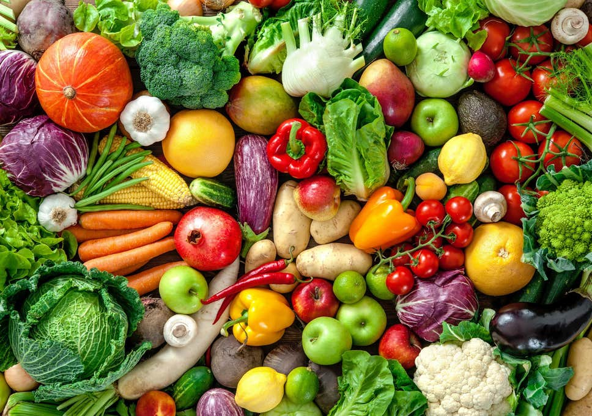

Plus Minus Diet Vegetarian Yang Perlu Kamu Ketahui

Jakarta - Gaya hidup vegetarian dan diet vegan sedang digandrungi belakangan ini. Mereka yang berkomitmen untuk tidak memakan daging memang sekilas nampak lebih sehat, namun sebuah riset yang dilaporkan British Medical Journal tidak sepakat
Riset ini menyebutkan bahwa vegetarian justru memiliki risiko terkena stroke lebih tinggi, meskipun memang ada risiko terkena penyakit jantung yang lebih rendah ketimbang pemakan daging.
Dilaporkan Mirror, peserta studi ini adalah nyari 50 ribu pemakan daging, vegetarian dan vegan, serta pemakan ikan. Hasil menunjukkan bahwa diet vegetarian memiliki efek perlindungan dari penyakit jantung koroner, namun tidak pada stroke.
Banyak ahli telah mempelajari lebih jauh lagi soal kaitan yang lebih masuk akal antara kedua hal ini. Riset terakhir dari Oxford menunjukkan perbandingan antara pemakan daging merah, ikan dan vegetarian memiliki 13 persen dan 22 persen risiko penyakit jantung lebih rendah.
Akan tetapi, vegetarian juga menunjukkan risiko terkena stroke 20 persen lebih tinggi dari pemakan daging. Namun tak perlu panik, ada banyak cara agar vegetarian tetap bisa terlindung dari penyakit ini.
Sebenarnya apa alasan mengapa risiko stroke bisa naik? Para vegetarian memiliki asupan buah, sayur, biji-bijian dan kacang ketimbang pemakan daging dan asupan sodium yang lebih rendah. Sebaliknya, pemakan daging memiliki asupan protein yang tinggi dan bisa menaikkan asupan energi.
Vitamin B12 menjadi faktor signifikan sebagai nutrisi paling penting dan yang menjadi risiko pada pelaku diet vegetarian. Karena vitamin ini tidak ada dalam sayuran dan secara alamiah berasal dari sumber hewani.
Walaupun begitu, belum ada bukti terkuat hingga sekarang untuk membuktikan bahwa asupan B12 yang rendah bisa menyebabkan stroke. Akan tetapi semua nutrisionis setuju bahwa kita harus mengurangi asupan makanan olahan, bahkan sebisa mungkin menghindarinya. Sayangnya, memang cukup sulit bagi para vegetarian untuk mengurangi jenis makanan tersebut.